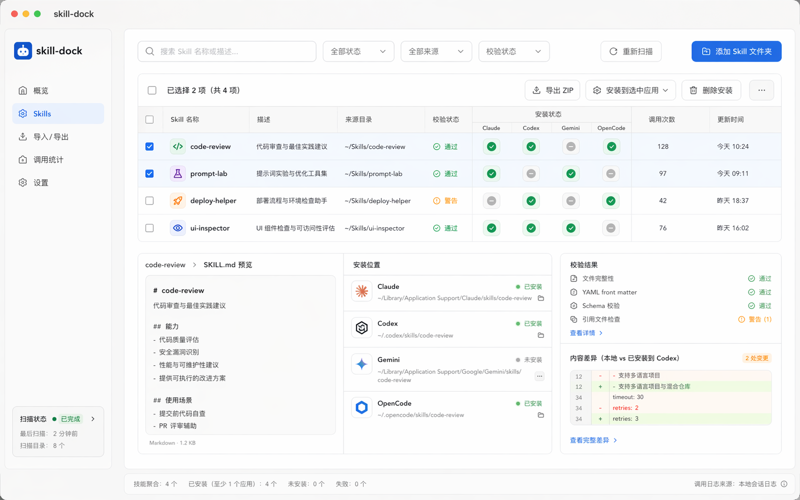
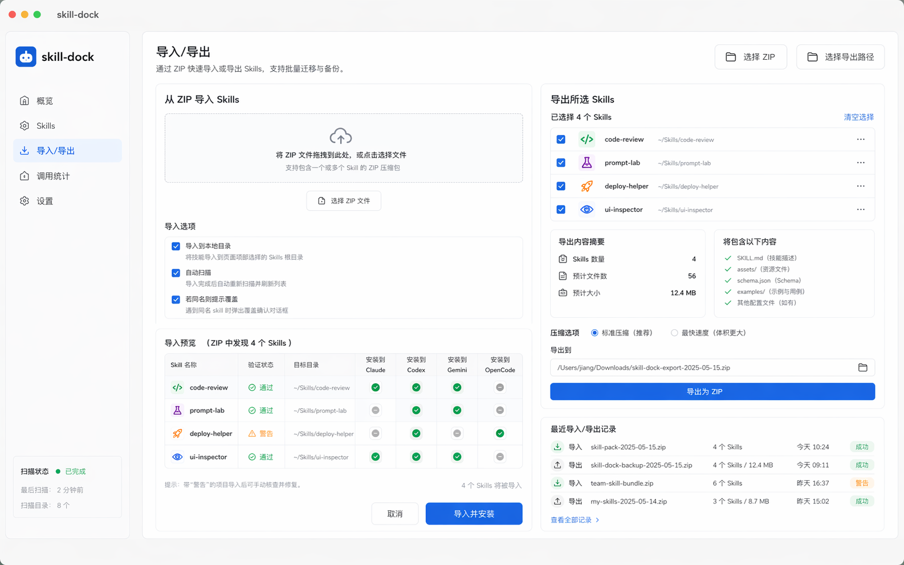
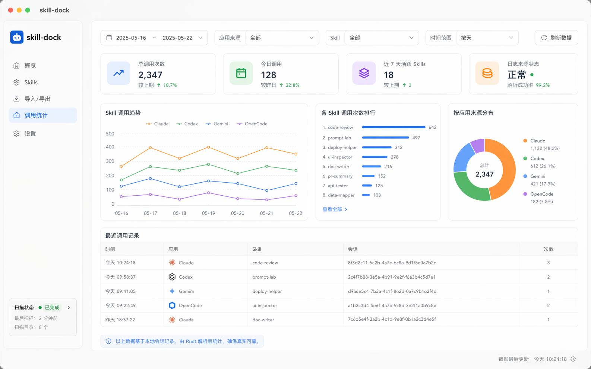
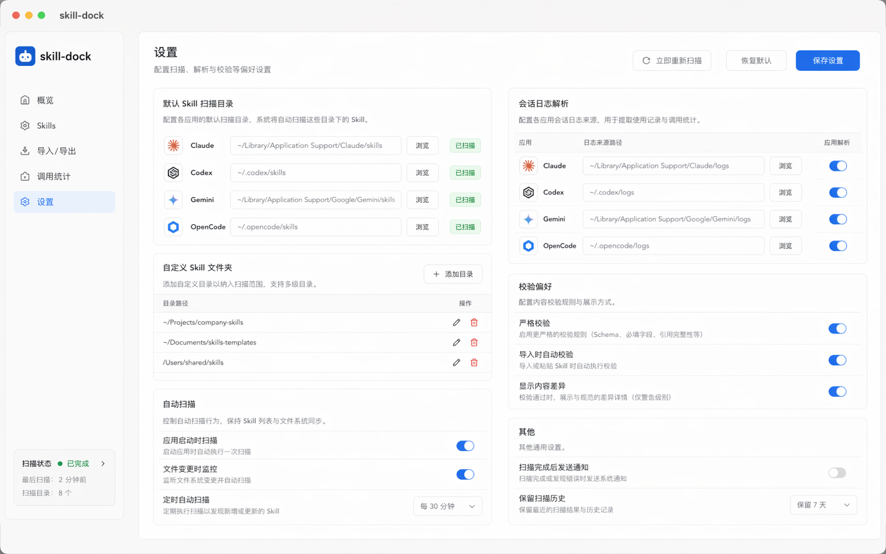

Skills Workspace
按 Bundle 聚合后的 Skills 主工作区
在列表、安装状态和摘要预览之间快速切换。

把本地 Skill 管理从散落目录，收敛成可操作的统一视图。
统一扫描 Codex、Claude、Gemini、OpenCode 和自定义目录。
不只看单个 Skill，也能按 Bundle 和本地整合包来组织能力集合。
优先展示摘要、状态和操作，不把原始 Agent 文档堆到前台。
这里放的都是当前版本已经可用的本地页面。
在列表、安装状态和摘要预览之间快速切换。

批量迁移、备份和恢复本地 Skills。

基于本地会话日志统计，并把高开销扫描收敛到按需触发。

统一管理 Skill 目录、自定义目录和扫描偏好。

当前版本先解决扫描、聚合、迁移、同步和排查这些真实本地问题。